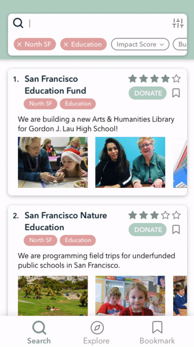

features

Topic and Location Search
Search by Keyword and Area-of-Impact considers the primary interest of users

Search Filtering
Filter modal allows for specifying charity impact score, budget, and active years

Explore Page
Curated charity lists offer a jumping of point for more discovery
List View
Charities relevant to search are displayed with decision imperative information: project goals, images, and impact score
Charity Information Page
Ordered and concise page provides credibility for charities while showing users the impact of a potential donation